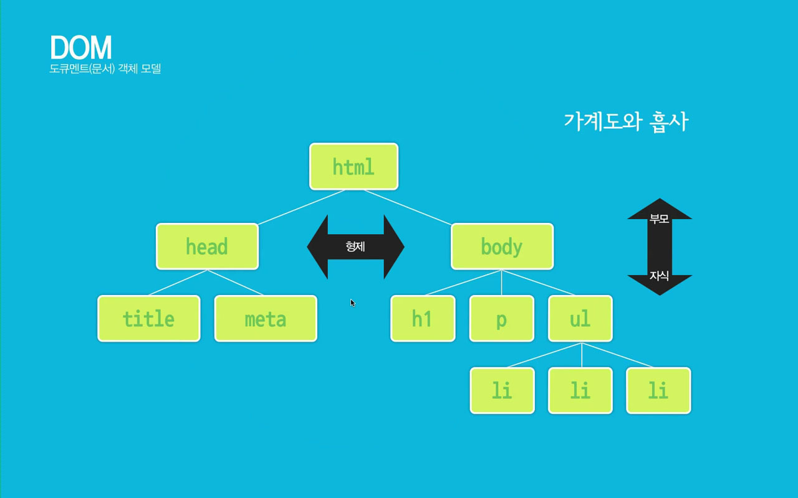

02_document_object(문서객체모델)
DOM(Document Object Model)은 넓은 의미로는 웹브라우저가 html을 인식하는 방법이고, 좁은 의미로는 웹문서 안에 있는 요소(객체)들의 집합니다
웹브라우저(크롬, 사파리, 파이어폭스, 오페라, 익스플로러, edge, 모바일 브라우저)마다 DOM 구현이 호환되지 않아서 W3C에서 DOM에 대한 표준 규칙을 작성하였다
1. DOM tree 구조의 이해
DOM은 노드(node)들의 집합이라고 할 수 있으며, DOM의 노드에는 요소 노드, 속성 노드, 텍스트 노드로 구성되어 있다. 노드는 DOM의 구조를 이루는 최소단위이며, 이 노드들의 집합체가 DOM이라고 할 수 있다
- DOM을 구성하는 기본 원칙
- 모든 html 태그는 요소(element) 노드이다
- html 태그에서 사용하는 텍스트 내용은 자식 노드인 텍스트(text) 노드이다
- html 태그에 있는 속성은 자식 노드인 속성 노드이다
- 주석(comment)은 주석 노드이다




2. document 객체의 속성
- domain : 현재 문서가 있는 서버의 도메인 이름
- title : 현재 문서의 제목
- bgColor : 문서의 배경색
- fgColor : 문서의 글자색
- linkColor : 문서의 링크 글자색
- alinkColor : 링크를 클릭하였을 때 글자색
- vlinkColor : 방문했던 링크의 글자색
- anchors : 문서의 anchors들의 배열
- cookie : 쿠키에 대한 정보
- url : 문서의 url 주소
3. document 객체의 메소드
- open() : 데이터를 보낼 준비
- close() : 문서에 데이터 출력을 마무리함
- clear() : 브라우저에서 문서를 지움
- write() : 문서에 데이터를 출력함
- writeIn() : 문서에 줄(line) 바꾸기를 포함하여 데이터를 출력함
실습1. 현재 작성 중인 문서의 정보 알아 보기
문서의 title 정보와 url 주소 가져 오기
실습2. 버튼 클릭 시 문서 안의 글자색, 배경색 변경
실습3. 버튼 클릭 시 h3 태그만 선택하여 글자색 '빨강'으로 바꾸기
실습3. 버튼 클릭 시 li 태그만 선택하여 글자색 '파랑'으로 바꾸기